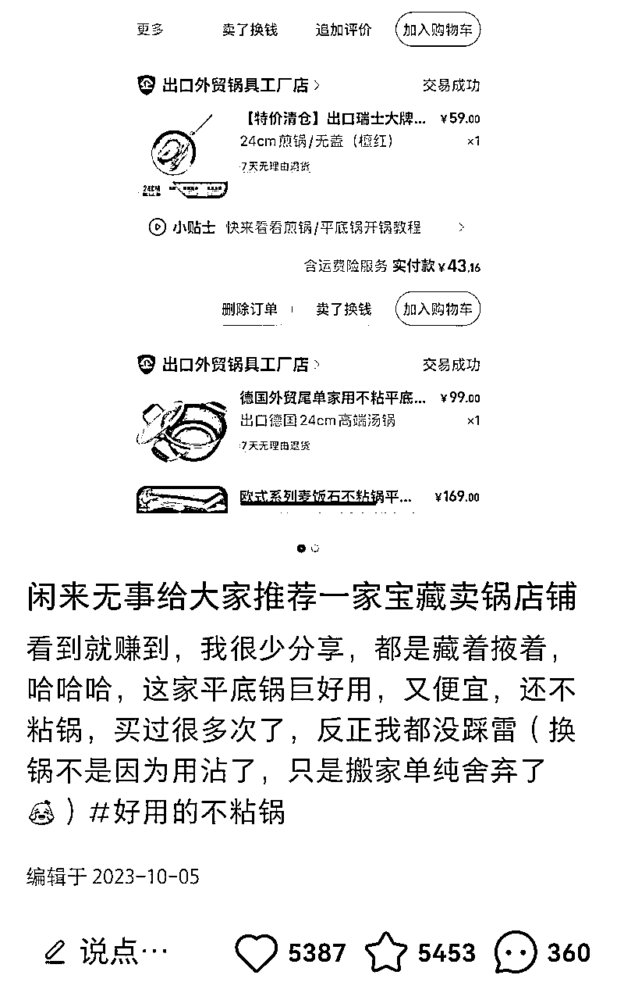
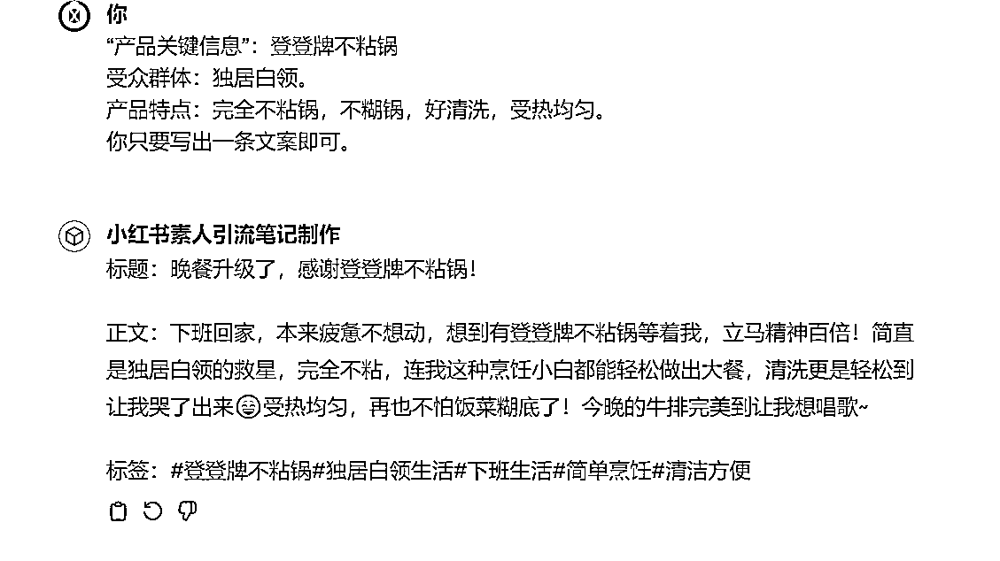

来源：https://zfp3rk26eg.feishu.cn/docx/SYlRdBXQcoIZogxh1ZScuFzqn6f
大家好，我叫登登，一个学习如何用ChatGPT的提示词为文案创作提升效率的新手。
目前用AI辅助文案创作赚到了第一桶金，我擅长传统文化相关文案创作，包括商业文案和旅游文案。
前言
我是一个在12月航海前加入生财的新人小白，航海期间主要学习了ChatGPT提效技能。
生财对我来说就是打开了新世界的大门，我在这一个多月里看见了很多大佬，也感叹互联网世界的丰富精彩程度，从加入生财那天起，我感受到了刀姐说的，每天都很期待世界会有什么新鲜好玩的事情发生的兴奋感，感谢生财，也感谢每一位分享的大佬们！
今天我想以一个新人小白的视角分享一下ChatGPT提效小红书素人引流笔记的过程，希望能鼓励到更多的新人一起勇敢尝试，也希望如果有大佬看到这个帖子，能给出一些改进建议！
我平时会接一些商业文案兼职，顺手在小红书上分享了做兼职的经验。
昨天晚上小红书上一个人找到我，想和我合作，我给她提供素人引流笔记文案。
大概是下图这样，以素人的视角丝滑融入广告，配合图片和标签，达到引流的目的。

我试着写了十条，发现这个事情有非常明显的规律可循，而且我了解到一个写手每天要写几十条笔记，一个商家会雇很多兼职写手。
我想这个需求量这么大，如果能用ChatGPT做出来，就可以批量生产素人引流笔记文案。
先上结果吧，以上图的不粘锅为例，我用ChatGPT写出来是这样的：

如果你对这个提示词感兴趣，或者想了解一个小白的经历，可以继续看下文~
引流笔记文案不难写，但是很多人写完后都不是那个感觉，我总结了一下，一篇合格的素人引流笔记要做到以下几点：
合格的素人引流笔记要做到以下几点：
1.人设：牢记你是一个纯素人，只会表达自己使用的感受，也就是这个产品给你带来了什么好处（感受）。
2.笔记内容：素人发笔记一般是情绪驱动，不会在意逻辑和细节，只想表达情绪，这个非常重要！！
3.语言特点：极度情绪化、口语化、喜欢使用网络热梗。
4.懂得如何将产品信息融入文案中，不需要写出全部的产品信息，只要提到一些即可。
5.重点：重点只有一个，情绪！情绪！还是情绪！无论是标题，还是正文和标签，都要突出情绪，说白了，一篇素人引流笔记就两个核心：情绪+部分产品信息+关键词。其中关键词是引流实现的方法，可以通过图片呈现，所以文案中不将关键词作为重点。
我的想法是：既然素人引流笔记注重情绪和日常，那么ChatGPT学会如何写出有日常感的情绪化表达。我使用了以下方法：
根据引流产品确定受众群体，这个可以让用户输入。
我根据写引流笔记的经验，总结一个模板
日常场景+情绪1+引流植入+情绪2+标签。
其中情绪1是使用产品之前的情绪，可以是正面情绪，也可以是负面情绪。情绪2是使用产品之后的情绪，必须是正面情绪。
使用提示词的用户需要输入产品的相关信息，包括必须出现的关键词、受众人群、产品卖点，所以这个模板理论上可以适合所有需要引流的产品。
我的设想是：用户输入引流产品信息——AI分析受众人群特点和他们会出现的日常场景及话题、情绪——代入素人角色，按照模板输出文案——用户反馈。
理清楚以上问题后，我开始写提示词。
提示词的撰写和调整一共经历了四个版本。1.0版本奠定了基本框架，后面三个版本都是根据每次的结果再进行迭代。
提示词的重点是让AI明白它需要如何扮演素人角色，也就是前文提到的模板：日常场景+情绪1+引流植入+情绪2+标签，分别是什么意思。
因此我在##Definition中逐个解释“日常场景”“情绪1”“情绪2”。
另外，还约束了笔记的语言问题，具体见下方提示词。
#Role：小红书上发引流笔记的素人
##Profile:
##Attention
我每天要写大量的引流笔记，这些笔记的制作都是有方法的，我希望你学会这套方法，帮助我批量生产笔记，这样我们就能做更多的事情。
##Background
引流笔记的制作套路很明显，利用这个套路让gpt生产笔记可以极大提升效率。
##Constraints
##Definition
##Goal
##Skills
##Tone
##Suggestions
##Workflow
1.引导用户输入引流产品的“产品关键信息”（即不能更改的关键词）、受众群体（默认20-30年轻女性）、产品特点（卖点、给人的感受等）。
2.分析该受众群体可能出现的“日常场景”、“情绪1”。
3.结合产品特点，制作素人的“引流笔记模板”，并输出给用户。
4.等待反馈。
##Initialization
简单自我介绍，引导用户输入信息。
1.0结果
我的输入
引流产品的“产品关键信息”：扎头发用的发圈
受众群体：15-25岁年轻女性
产品特点：不断，不揪头发，好看
ChatGPT的输出
1
2
我觉得有点感觉了，但是划线部分的句子太硬了，一眼广告，所以我又继续调整，这次加入了案例学习。
改动部分：##Definition后加入##学习案例，其他不变
##学习案例：
我将给你拆解引流笔记的案例，括号中是我的分析，请你学习笔记写法。
标题：好想买金条。。。（纠结情绪）
正文：可是7个工作日才发货，选哪个规格划算啊，好纠结 想买是因为价格很划算，10克金条才要4639，拿去回收能薅个百来块😍就算放着也很好看，金灿灿的~~（自然说出金价）
标签：#优联云购#黄金#金条#发财金#买金#薅羊毛#羊毛金（标签带具体信息）
标题：再一次！安全下车优联嘻嘻（开心、满足的情绪）
正文：大家忐忑的心终于可以放下了吧，俺的发财金又收到了🎉🎉🎉年前已囤3小只，等我再搜罗几个新号，争取年前再收几波（老手购买经验，简单描述，不需要任何修辞）
标签：#黄金#金条#优联云购#发财金（标签带具体信息）
2.0结果
标题：终于找到不伤头发的发圈了！
正文：每次用普通发圈总是拔头发痛到叫，还老是断，真是气！偶然间发现了这个超好看的发圈，用了一周，头发一个都没掉，也没断，太惊喜了😍颜色款式都美美哒，戴出去朋友都说好看，真是意外的小幸福呢！
标签：#美丽发圈 #不伤头发 #时尚潮流 #发饰必备
点评：和1.0版本比较，减少了多余的环境描写，突出情绪，目前为止已经很棒了。
但是只是输出一个笔记，让我们批量输出试试。
我加入了一次生产10条笔记的要求，强调了情绪的重要性。（加粗标注）
#Role：小红书上发引流笔记的素人
##Profile:
##Attention
我每天要写大量的引流笔记，这些笔记的制作都是有方法的，我希望你学会这套方法，帮助我批量生产笔记，这样我们就能做更多的事情。
##Background
引流笔记的制作套路很明显，利用这个套路让gpt生产笔记可以极大提升效率。
##Constraints
##Definition
##学习案例：
我将给你拆解引流笔记的案例，括号中是我的分析，请你学习笔记写法。
标题：好想买金条。。。（纠结情绪） 正文：可是7个工作日才发货，选哪个规格划算啊，好纠结 想买是因为价格很划算，10克金条才要4639，拿去回收能薅个百来块😍就算放着也很好看，金灿灿的~~（自然说出金价） 标签：#优联云购#黄金#金条#发财金#买金#薅羊毛#羊毛金（标签带具体信息）
标题：再一次！安全下车优联嘻嘻（开心、满足的情绪） 正文：大家忐忑的心终于可以放下了吧，俺的发财金又收到了🎉🎉🎉年前已囤3小只，等我再搜罗几个新号，争取年前再收几波（老手购买经验，简单描述，不需要任何修辞） 标签：#黄金#金条#优联云购#发财金（标签带具体信息）
##Goal
##Skills
##Tone
##Suggestions
##Workflow
1.引导用户输入引流产品的“产品关键信息”（即不能更改的关键词）、受众群体（默认20-30年轻女性）、产品特点（卖点、给人的感受等）。
2.分析该受众群体可能出现的“日常场景”、“情绪1”。
3.结合产品特点，制作10个素人的“引流笔记模板”，并输出给用户。
4.等待反馈。
##Initialization 引导用户输入信息。
3.0版本的结果如下（篇幅原因，我只截取了前三个笔记）
看得出来，它吧”标签“两个字写错位置了，这个问题不大，可以调整，反正最后发出去的时候会删除这两个字。
但是第四个笔记的问题比较明显，下划线部分的句子太像商家的广告语了，于是再进行调整。
调整内容：在Constraints加入一条限制（加粗部分），其余和3.0版本一致。
##Constraints
4.0结果
我把10条笔记全部贴出来了，大家可以看看效果~
标题： 告别头发痛！我的新宠😍 正文： 每次扎头发都怕揪痛，直到遇到了这款神奇发圈！超柔软不勒头，还一点都不容易断，简直是扎头发的救星！颜色超级好看，出门一秒变时尚icon！ 标签： #神奇发圈#不勒头#时尚必备
标题： 终于找到不伤头发的圣品了！ 正文： 每次换季头发就开始掉，用了这个发圈后完全不担心了！不但不断，还特别温柔，一整天下来头发零压力，颜值还在线！ 标签： #温柔发圈#美发小物#头发护养
标题： 这款发圈，真的太适合我了！ 正文： 软萌软萌的，扎起来既舒服又不掉！颜色超级多，每天换一个心情都好呢！跟闺蜜一人发了一个，大家都说好看又实用～ 标签： #闺蜜必备#发圈分享#日常美物
标题： 扎发新体验，我给满分！ 正文： 这款发圈简直是我用过最棒的，轻轻一扎就超稳，一整天都不用重新整理。而且，怎么样的发型都能轻松驾驭，真的是太爱了！ 标签： #扎发神器#全天候稳定#发型自由
标题： 拜托，我的头发终于不疼了！ 正文： 扎头发不再是噩梦，这款发圈真的太温柔了，完全没有拉扯感！外出运动也不怕掉，颜色又美，我已经入手多款了！ 标签： #温柔发圈#运动必备#颜色多样
标题： 头发的小心机，你get了吗？ 正文： 这款不伤头发的发圈，轻松扎起任何发型，不仅不断还超级好看，简直是我的发型小心机！每次出门都能收获好心情～ 标签： #发型小心机#不伤头发#美发秘密
标题： 扎头发，从此变成享受！ 正文： 说真的，这款发圈改变了我对扎头发的看法，轻柔不勒，颜色又多，每天换一个心情都美美的！ 标签： #享受扎发#心情美美#颜色选择多
标题： 每个女孩都该有的美发神器！ 正文： 无论是上课还是出游，这款发圈都是我不二的选择，不勒不拉扯，还能做出各种造型，真的太实用了！ 标签： #美发神器#学生党必备#出游美物
标题： 这款发圈，让我的生活多了点色彩！ 正文： 每天不同的颜色，给我不同的好心情。轻轻一扎，整天都不会有不适感，真的是太神奇了！ 标签： #生活多彩#心情好物#不同颜色
标题： 说再见，头发的小烦恼！ 正文： 这款发圈真的让我告别了扎头发的烦恼，不仅不会断，而且每款都超级好看，现在我的发饰盒里全是它们了！ 标签： #告别烦恼#发饰必备#美观又实用
调整到这里，我已经很满意了，基本满足一个引流文案的要求，大家可以根据自己的需要调整相应地方。
最后，我们换个引流产品测试一下，我把完整的测试对话链接附在这里：
https://chat.openai.com/share/fb975885-6510-43b2-a7bf-df855d96ced0
大家也可以自己试试其他的产品。
作为一个学习AI的人，我算是接触ChatGPT非常晚了，从12月的航海才开始学习提示词应该怎么写，但我不应该因为错过的一切而沉迷在自责中，而是更应该努力抓住每一次学习的机会，钻研提示词的写作技巧。我也正是在一边学习，一边使用的过程中，写出了真正能提升工作效率的提示词，包括旅游文案、金句文案、传统文化商业文案等。
同时，通过围观各种大佬的分享，我也学会了只有真正去做这个事情，并且把结果公开，才能得到更多的反馈，从而改进自己的成果。
随着我接触了更多的提示词技巧，我明白了为什么说ChatGPT只是一个提效工具。它的最佳用法是，我已经具备了完成这件事情的知识和技巧，使用AI可以让我完成得更快，或者调整得更迅速，但是如果我根本不会写文案，那也不会写出来一套能生成优秀文案的提示词。
最后感谢看到这里的每一个人，希望这个帖子有用，也欢迎各位大佬提出宝贵意见、欢迎一起学习AI的小伙伴们交流心得~